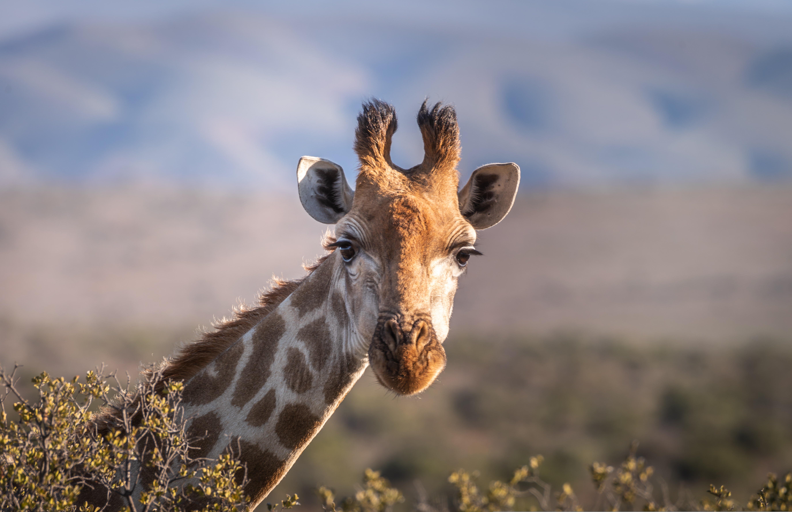

Información General
| Nombre Común | Jirafa |
|---|---|
| Nombre Científico | Giraffa camelopardalis |
| Clase | Mamífero |
| Vida Media en Libertad | 25 años |
| Tamaño | De 4,27 a 5,79 metros |
| Peso | De 793,79 a 1270,06 kilos |
Fotografía
Descripción
La jirafa (Giraffa camelopardalis) es el animal terrestre más alto del mundo, reconocida por su cuello excepcionalmente largo y sus distintivas manchas. Habita principalmente en las sabanas y bosques abiertos de África subsahariana, donde su altura le permite alcanzar hojas en lo alto de los árboles, especialmente acacias.
Características Principales
- Hábitat: Sabanas, bosques abiertos y matorrales de África subsahariana.
- Alimentación: Herbívora. Se alimenta principalmente de hojas de acacia, hasta 34 kg por día.
- Comportamiento: Son animales sociales que viven en grupos llamados "torres". Duermen entre 4 y 5 horas diarias.
- Reproducción: Gestación de 15 meses. Las crías nacen midiendo ya 1,8 metros.
- Estado de conservación: Vulnerable según la UICN.
- Curiosidad: Su lengua mide unos 45 cm y es de color azul oscuro para protegerse del sol.